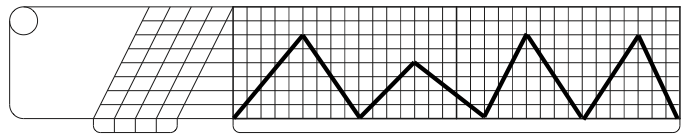

Scratch Dictionary
For some reason, I’ve found it really difficult to find a repository of scratch techniques on the internet. Every now and then I’ll come across a discussion about a particular one and someone will take a picture of a hand drawn diagram of said scratch, but what if you don’t have time to dig through dead turntablist forums or half complete technique repositories? Well I hope I can help. Currently I have a giant whiteboard of scratches for my personal reference but that doesn’t help anybody else, and that’s what this site is about – DJs helping DJs.
If you don’t understand the diagrams, please refer to the TTM section below. In an ideal world this page will be updated as often as I have free time (and until I run out of scratches to transcribe). Lastly, apologies for the inconsistencies in the diagrams, perfection takes time. If you want to drop comments, hit up the contact page. Enjoy.
Navigate
Fader-less Scratches
Fader Scratches
Combo Scratches
TTM
TTM or Turntablist Transcription Method was invented by John Carluccio as a way to write music tablature for DJs. It works by graphing record movement along the vertical axis against time along the horizontal axis. The line is used to draw out the dynamic record motion. The blank space in the notation is where the crossfader is “closed”, or muting the record that’s playing. Small dots in the notation stand for “clicks” where the crossfader is momentarily closed. The grid can be used to place the scratches against standard musical phrasing, but I don’t like to get that particular. In fact, I don’t think this should be used to break down any scratch routine into gruesome detail. I use it as a tool to learn particular scratches and then to learn them as combos. I hope these will serve as a reference tool that you can use to better understand more complicated scratch patterns.
The basic idea of the tablature is shown below. The sample (‘freshh’) on the far left is at an angle meant to represent it playing at normal speed, while the varying angles, breaks and directions of the samples on the rest of the staff are meant to represent changes to the playback of the sound.
For a better (and more legitimate) explanation of how this all works, check out the official TTM user manual located right here. There’s also this pretty sweet, overly done website that lets you click the mouse and watch visuals, who wouldn’t want that. Check it out at easy-fader.com.
Fader-less Scratches
Baby Scratch
This is the ‘ziguh ziguh’ we all know and love. Put one hand on the record, rock that thing back and forth. What you do with the other hand is completely up to you.

Tears
This scratch involves pausing the record momentarily while scratching. The simplest cases are shown, different timings mean endless possibilites. Learn these, they’ll get combined with fader techniques for some really advances scratches.

{kind=link}
{kind=link}
{kind=link}
Fader Scratches
Forward Cutting
The simplest scratch involving the record and cross fader. Open the fader, push the record forward, close the fader, pull the record back, repeat. Get funky.
{kind=link}
Reverse Cutting
Open the fader, pull the record back, close the fader, push the record forward, repeat!
{kind=link}
Dicing
This is more of technique description than an actual scratch. Dicing involves opening the fader only to catch the record as it’s moving, and closing it during pauses and direction changes. It depends on what ‘fader-less scratch’ you apply it to but it acts to clean up the sound. Throw it on a baby scratch or tear (my favorite). This one is all in the application.
{kind=link}
Transforms
Transforming is a technique referring to irregular fader clicking combined with record movement. There’s no right or wrong way to do it, and the definition is fairly loose, but the idea is to get different pitches of a sample by varying the record speed and then applying loosely timed clicks, sometimes 4 or 5 even…
{kind=link}
Chirps
Start with the fader open, and as you push the record forward, close the fader, next open the fader and pull your hand back to the starting position. If you cut regular then your hands should move synchronously, with your record hand moving forward and fader and moving outward. If you cut hamster, your hands with move synchronously opposite, record hand moving forward and fader hand going inward. If you take a high pitched sound and do this scratch fairly fast, you get what sounds like chirping birds. This is also responsible for the ‘wicka wicka’ sound.
{kind=link}
This technique, invented in the 90s by DJ flare, requires you to move your record and fader hand out of sync to obtain more sounds per motion. It involves moving the record while momentarily closing the fader, giving you an pause. This momentary closing of the fader is referred to as a ‘click’ (I’m going to postulate that’s because of the noise it makes when it hits the end of it’s throw). Flaring is a fundamentally different way to scratch that opened up the door for a lot more advanced techniques that were invented later.
All too often these scratches are named and discussed separately, but they are completely one and the same. ‘Flares’ refer to the technique of clicking the fader closed during the record motion, while ‘orbits’ refer to the process of performing a scratch and then doing it in reverse, thus returning to your starting point. The ’2 click orbit’ for instance is just a slightly more compact way to say the ’2 click flare orbit’, which is shorter still than writing ‘ 2 click flare forward, 2 click flare reverse’.
1 Click Flare
Start with the fader open, push the record forward (or pull it back) and tap the fader closed. You should be turning 1 sound (record drag) into 2 sounds with the click pause in the middle.
{kind=link}
2 Click Flare
Start with the fader open, push the record forward (or pull it back) and tap the fader closed twice while the record is in motion. You should be turning 1 sound (record drag) into 3 sounds with the 2 click pauses in the middle.
{kind=link}
Original Flare
I think of this scratch in two parts. For the first half, start with the fader open, move the record forward and tap the fader closed TWICE, ending closed. For the second half, just open the fader and pull the record back. You should be turning a baby scratch into three sounds, something like “Ahh – hh – hhhhA’ if that makes any sense. You can also apply the same fader motion to a back-forward baby and you’ll get a reverse OG flare.
{kind=link}
3 Click Flare
Same as the 2 click technique but with an extra click. This will split one sound into 4 with the use of 3 pauses. This scratch can be done by pinching the wrist to get the successive clicks, but as the tempo of the scratch increases it’s generally easier to use a ‘crabbing’ technique with 3 fingers. For me, wrist pinching is more precise but crabbing is faster, find a balance my friends!
{kind=link}
Crescent Flare
This scratch is the same as a 1 click orbit, but with an added click in the middle. During a 1 click orbit you get a pause when you change direction, with the crescent flare you get the same thing but you clean up the sound quite a bit. The end result should be 4 sharply chopped sounds. As Qbert described in his How To volume 1, this is called the crescent flare because it comes back around like a moon shape. Don’t worry, I don’t know what that means either.
{kind=link}
Boomerangs
I think ‘Delayed 2 click flare’ is a more instructive name for this scratch, but some people would argue that name is reserved for an entirely different scratch. Either way, Boomerang seems to be the accepted terminology. This scratch is a 2 click orbit technique with the fader and record hands slightly off timed. It also repeats after 6 sounds, so unless you’re cutting to 3/4 timed jazz standards (dope!), could say this is doubly-off timed. What you end up with is a dicing pattern that sounds super duper fresh.
I like to think of this scratch in terms of 2 halves (each Forward-Back-Forward). The first half starts with the fader closed, next open it, do a baby and close it, then follow it with a forward stab. The next three notes are made by doing the first half of the pattern in reverse. This scratch is weird at first, but once you get it you realize it’s just an off timed 2 click and you’ll be glad you spend all those long hours learning how do do 2 clicks (which you did right??)
{kind=link}
Swing Flare
Once you do this scratch at a fairly good tempo you’ll realize that this another 3 click technique – so get your wrist ready. I find this scratch fairly simple, hopefully the instructions will be also. Start with the fader closed, open it and do a baby, then close it. Then dice a baby scratch into two sounds, closing the fader on the direction change and ending closed. Now you’re back where you started and ready to begin again. The end result should be 4, and if you played it with your mouth would sound something like “Ahhwaahh Ahh Ahh”. I chose not to put this in with the other flare scratches because it isn’t really a flare technique, if you look at the diagram you’ll see that any fader clicks happen on direction changes, not in the middle of a record motion.
{kind=link}
Autobahns
This is a relatively new technique, popularized (invented?) by DJ Rafik. It is a combination of a 2 click and a 3 part tear. It’s easier to follow the diagram than to read it in words but I’ll do my best. I think of this scratch in three parts:
- 1. Open the fader, do a baby scratch, then close the fader, then do a forward stab
- 2. This is your new starting position, half way into the sample. Do the same scratch as described in the first step and end a little further into the sample.
- 3. Open the fader, do a baby scratch, close the fader, then do a reverse stab. You should be back at your starting position
You might not notice Rafik doing them in his routines, but that’s probably because he does them so fast. He also uses a twiddle technique to get ridiculously fast 2 clicks. Must be the reason he finds this scratch “very easy“!
{kind=link}
Slow Autobahns
People starting talking about this scratch due to some videos of Rafik or somebody on Qbert’s Scratchlopedia video trying to show Autobahns and doing different techniques unintentionally (I guess?). This is a similar to the regular autobahn except that its made of 8 sounds so that it fits neatly into one bar and it’s a palindrome scratch (if you learn the first half, do the second half in reverse!). I’ll split the scratch into 3, 3 and 2 sounds for the explanation
- 1.Start with the fader closed, open it, do a baby and close the fader, follow it with a forward stab. End with the fader closed and half way into the sample.
- 2.Repeat the first step, ending even further into the sample
- 3.Pull back the record and do a 1 click and end with the fader closed. This last step could be seen as half of a reverse OG Flare.
Once you get the flow of this scratch, you’ll see how the two click technique fits in and this is kind of just a half assed autobahn.
{kind=link}
Short Autobahns
This scratch is sort of a bastardization of the Autobahn technique that turns it into a really short scratch with 6 sounds. If you’ve gotten this far you probably don’t need an explanation but nonetheless….To do this scratch follow the steps of the autobahn but take out the middle step. For clarity, here it is:
- 1. Open the fader, do a baby scratch, then close the fader, then do a forward stab
- 2. Open the fader, do a baby scratch, close the fader, then do a reverse stab. You should be back at your starting position
{kind=link}
Reverse Autobahns
Get ready, this one is kind of gnarly. It’s helpful to learn how to do every scratch on this page in reverse, just know the autobahn isn’t a very symmetrical scratch like most so don’t expect to be able to pick this up easily just because you have the regular one down (it might even be harder…). I can barely do it and probably can’t explain it. I’ll just say, if you’re attempting to get this scratch down, you probably don’t need me to walk you through it.
{kind=link}
Combo Scratches
Chirp Flare
This scratch is done by doing a chirp, followed by a 1 click orbit. If done correctly, you’ll get 6 sounds. The power in this scratch comes from the relative simplicity of the hand motions, meaning you can get this scratch going pretty fast if you try. Your fader hander will do a regular clicking pattern while your record hand alternates between a short and long baby scratch.
{kind=link}
OG Flare -> 2 click -> Reverse
I can’t do this scratch all that well, but I think it’s pretty funky so I threw it in. Do an original flare followed by a 2 click flare, then do those scratches in reverse. What I mean is, OG flare, 2 click flare, reverse OG flare, and lastly a 2 click flare done over a record pull back.
{kind=link}